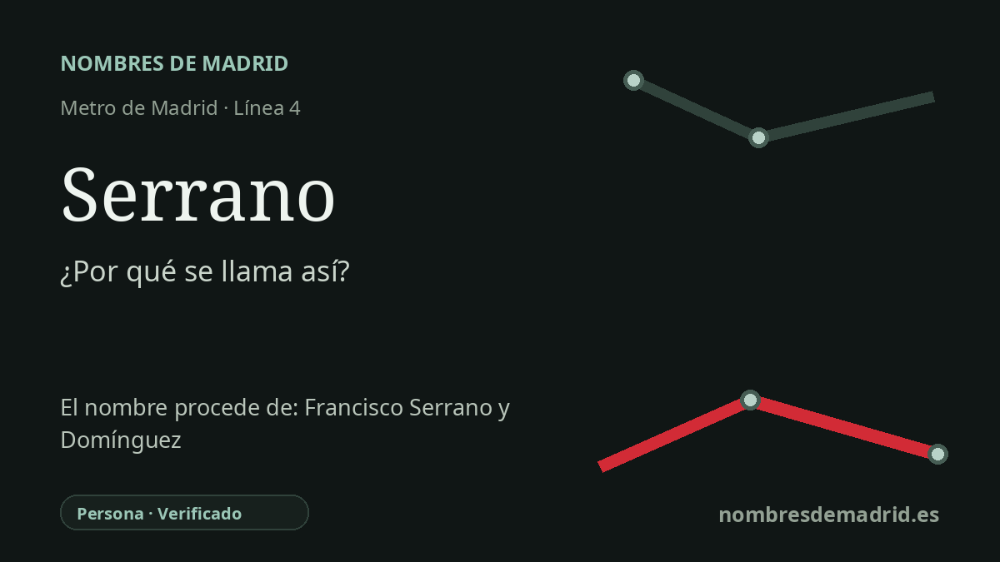

Publicado el · Investigación de Nombres de Madrid · Cómo verificamos cada origen · 6 fuentes consultadas
Respuesta rápida
La estación de Serrano debe su nombre a la calle de Serrano, que conmemora a Francisco Serrano y Domínguez, general y político del siglo XIX que fue regente tras la Revolución Gloriosa de 1868. La vía tuvo nombres anteriores, entre ellos Isabel II y Narváez, antes de adoptar el de Serrano después de 1868.
La historia del nombre
La estación de Serrano debe su nombre a la calle situada junto a ella, la calle de Serrano. La parada de Metro está en la línea 4, bajo la calle de Goya entre Serrano y Lagasca, de modo que su denominación sigue el criterio habitual del Metro madrileño: tomar como referencia una vía o lugar inmediato.
Detrás de ese nombre está Francisco Serrano y Domínguez, duque de la Torre, general y político español nacido en San Fernando, Cádiz, en 1810 y fallecido en Madrid en 1885. La Real Academia de la Historia lo identifica como regente del Reino, militar y político, y el Congreso de los Diputados lo sitúa entre los dirigentes de la Revolución de 1868, conocida como La Gloriosa.
El nombre de la calle pertenece al paisaje político que se formó tras aquella revolución. El catálogo municipal de patrimonio de Madrid señala que la vía tuvo denominaciones anteriores vinculadas a Isabel II y a Narváez, y que pasó a llamarse Serrano después de la entrada del general en Madrid en septiembre de 1868, cuando era presentado como héroe revolucionario. La misma ficha municipal recoge la placa que recuerda la casa donde vivió y murió.
La estación se abrió con el tramo inicial de la línea 4 entre Argüelles y Goya en 1944. La documentación histórica de Metro de Madrid describe aquella primera línea 4 como la 'línea de los Bulevares', un trazado transversal y poco profundo que enlazaba Argüelles con Salamanca y daba a la red un carácter más interconectado.
La etimología, por tanto, está bien asentada. Serrano fue una figura central del Sexenio Democrático y de la Constitución de 1869, pero esa constitución fue democrática o liberal en su contexto y no la primera constitución liberal española desde 1812. También importa distinguir entre el cambio de nombre de la calle después de 1868 y la asignación del nombre a la estación de Metro en 1944.